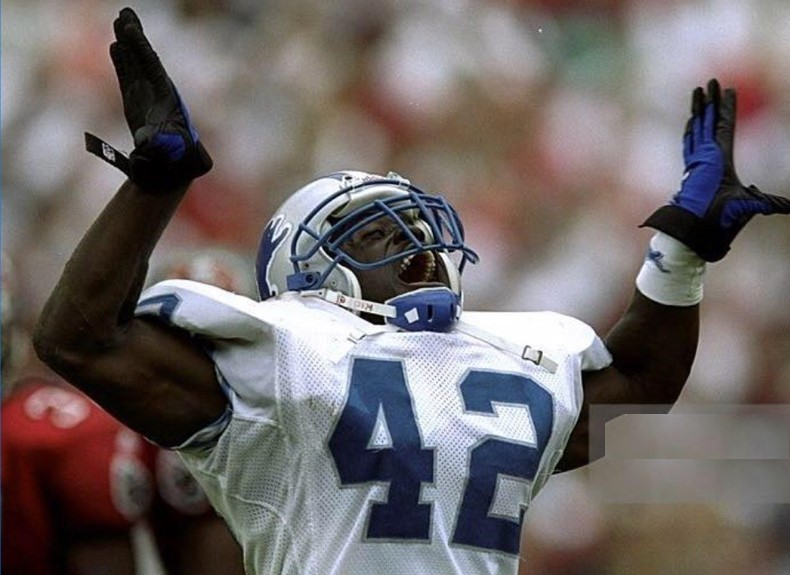
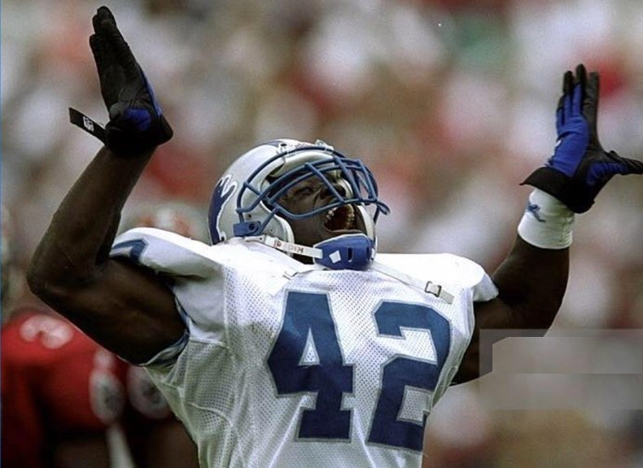

About ΔΚ
Over 40 years ago on Saturday, November 20, 1976, BOLD Delta Kappa Chapter of Omega Psi Phi Fraternity, Inc., was chartered at the Georgia Institute of Technology, making it the first Black Greek-Letter Organization chartered at Georgia Tech. The man who played a key role in getting Delta Kappa chartered was Brother James Mack, a graduate of Morgan State University (Π Chapter) and the Dean of Pledges for the first two lines at ΔΚ. Since that time, ΔΚ has added 30 lines and 121 Brothers to its number, with Brothers that have gone on to excel in the fields of engineering, medicine, law, government, business, finance, military service, and professional sports after graduation from Georgia Tech.
Besides their scholastic and community service achievements, ΔΚ Brothers have always been engaged in campus life by hosting Achievement Week events, incredible parties and yard shows, and GT Football gameday tailgates. Delta Kappa is also known for the power, precision, and dominance of its hop teams in competitive steps shows at various college campuses and around the Southeast.
The Chapter's commitment to academic excellence, community outreach, and social engagement has kept ΔΚ at the forefront of Georgia Tech campus life for 40 years. Past events include:
Indeed, future collegiate men of like mind,in partnership with their fellow students and the surrounding community, will ensure that BOLD Delta Kappa Chapter continues its service to the Georgia Tech and Atlanta communities for the next 40 years and beyond.
2017-2018 ΔΚ Officers
Brandan Brown, Basileus Marcus Daryl Jones, Vice Basileus Quentin Samuels, Keeper of Finance Chris Alan Hairston, Keeper of Records and Seal Francis Kallon, Keeper of Peace Justin D. Cotton, Esq., Webmaster Chad McKnight, Advisor
The value of our Fraternity is not in numbers, but in Men, in real Brotherhood. Eight Men thoroughly immersed in the true Omega Spirit are far greater assets than Eighty with lukewarm Enthusiasm.
Chapter Lineage
In The Beginning
June 17, 1976 (Winter) D.P. James Mack Ω 1. Wilfred Smith 2. Brian Lewis 3. Dwayne Laing 4. Reginald Jackson 5. Frank Boyd 6. Ken McCray Ω 7. Vermond Walker 8. Michael Martin Ω
Super Six
June 19, 1977 (Spring) D.P. James Mack Ω 1. Paul Butler 2. Leigh Torrence 3. Anthony Allen 4. Henry Skrine, Jr. Ω 5. Frank Rucker 6. Roy Simmons Ω
Renaissance
May 23, 1979 (Spring) D.P. Reginald Jackson 1. Michael Bruce 2. David Wheaton 3. George Steele 4. James Lane, Jr. 5. Dwayne Bell
Odyssey
April 5, 1980 (Winter) D.P. Leigh Torrance 1. Kurt Wilson 2. Mel Turner 3. Leonard Searcy 4. Frederick Works, Jr. 5. Jerome Peters
Over The Hill Gang
March 1, 1981 (Winter) D.P. James Lane, Jr. 1. Bernard Weston 2. Steve Edmonds 3. James Robinson 4. William McDonald, Jr.
Anixi Trilogy
November 29, 1981 (Fall) D.P. Frederick Works, Jr. 1. Eric Pinckney 2. John Pittman 3. Alan Hairston
A New Beginning
May 24, 1982 (Spring) D.P. James Robinson 1. Michael Pittman 2. Ozie Dee Adams, Jr. 3. Milton Parks, Jr. 4. Daryl Jones
Odd Couple
April 9, 1984 (Winter) D.P. Bernard Weston 2. Charles Wilson 3. John Dooley
Destiny
April 1, 1986 (Winter) D.P. Eric Pinckney 1. Rolandrius Bradford 2. David Miller 3. William Clyburn 4. Gavin Samms
Triumph
June 1, 1986 (Spring) D.P. John Dooley 1. Johnny Fountain 2. Keith Macey 3. Bernard Gunn 4. Stephen Andrews
Convict Six
March 4, 1987 (Winter) D.P. Gavin Samms A.D.P. William Clyburn 1. Cleophus Alan Hudson 2. Commodore Primous, Jr. 3. Troy Pinkney 4. Cedric Stallworth 5. Richard Bell 6. George Malone
Four-Ever and a Day
May 22, 1988 (Spring) D.P. Keith Macey A.D.P. Gavin Samms 1. Barian Woodward 2. Dana Gordon 3. Anthony Moore 4. Walter Reed
By Any Means Necessary
November 21, 1989 (Fall) D.P. Commodore Primous, Jr. A.D.P Cleophus Alan Hudson 1. Richard Harris III 2. Alex Parker 3. Robert Stanard 4. Stephen Clemons
The Seventh Sign
April 16, 1990 (Spring) D.P. Cedric Stallworth A.D.P. Anthony Moore 1. Marc Riley 2. Augustus Henderson 3. Daryl Watkins 4. Brian Blake 5. Derrick Hamilton 6. Dorian Cartwright 7. Sterling Garrett
Resurrection
June 2, 1991(Spring) D.P. Stephen Clemons A.D.P. Alex Parker 1. Andrew Headley 2. Sheldon Turner 3. Tobias Pace
Chain Gang
June 2, 1992 (Spring) D.P. Marc Riley A.D.P. Sterling Garrett 1. Kiel Divens 2. Chad McKnight 3. Claude Roney 4. Edward Fye 5. Antwane Sheppard Ω 6. Jason Reynolds 7. Ryan Stewart
And Then There Were Two
1993 1. Julian Walker 2. James Williams
Apocalypse
May 14, 1994 (Spring) D.P. Sheldon Turner A.D.P. Daryl Watkins 1. Jarrad Reddick 2. Darwin Newton, Jr. 3. Michael Thompkins 4. Dexter Stallworth
Faces of Death
December 1, 1995 (Fall) D.P. Chad McKnight A.D.P. Jason Reynolds 1. Michael Wells 2. Travis Spaulding 3. David Anderson 4. Kevin Martin
The Last QUE-Sade
October 13, 1997 (Fall) D.P. Jason Reynolds A.D.P. Michael Thompkins 1. Ian Johnson 2. Larry Brown 3. Charles Wright, II
Dr. Jekyll and Mr. Hyde
April 2, 1999 (Spring) D.P. Travis Spaulding A.D.P. Kevin Martin 1. Calvin Clayton, Jr. 2. Michael Gyamfi
Ground Zero
March 15, 2002 (Spring) D.P. Larry Brown A.D.P. Mike Gyamfi 1. Maurice Williams 2. Jicori Minor 3. Timothy Perdue, Jr. 4. Kelvin Cannady, Jr. 5. Justin Cotton 6. David Hutcherson, II 7. Maxwell Frazier
The Ascension
April 21, 2007 (Spring) D.P. Kelvin Cannady, Jr. A.D.P. Timothy Perdue, Jr. 1. Anthony Threatts 2. David Long 3. Michael Reed
Soul Survivors
April 16, 2008 (Spring) D.P. Anthony Threatts A.D.P. Michael Reed 1. Christopher Chidi 2. Gregory Smith
The Revolutionary Six
November 15, 2008 (Fall) D.P. Michael Reed A.D.P. Christopher Chidi 1. Douglas Walker 2. Warren Wills 3. Quincy Kelly 4. Joleon Pettway 5. Osahon Tongo 6. Arthur Rozier, IV
Like Father, Like Son
April 9, 2010 (Spring) D.P. Christopher Chidi A.D.P. Douglas Walker 1. Bijan Machen 2. DeRon Jasper
OWTKast
January 15, 2014 (Spring) D.P. Michael Reed A.D.P. Christopher Chidi 2. Mark Miller
The Second Coming
April 24, 2015 (Spring) D.P. Christopher Chidi A.D.P. Mark Miller 1. Michael Alemayehu 2. Fonjah Fon
Cerberus' Revenge
April 9, 2016 (Spring) D.P. Mark Miller A.D.P. Michael Alemayehu 1. Brandan Brown 2. Lawrence Austin 3. Terrell Lewis
Chaos
February 12, 2017 (Spring) D.P. Brandan Brown A.D.P. Terrell Lewis 1. Chris Alan Hairston 2. Quentin Samuels 3. Marcus Daryl Jones 4. Francis Kallon

 
Ryan Stewart (7.ΔK.1992)GT Football, Detroit LionsSafety

Ryan Stewart (7.ΔK.1992)GT Football, Detroit LionsSafety
 Osahon Tongo (5.ΔK.2008, Fall)GT FootballDefensive End, Linebacker
Osahon Tongo (5.ΔK.2008, Fall)GT FootballDefensive End, Linebacker